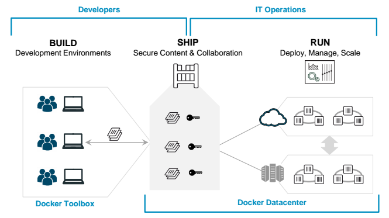
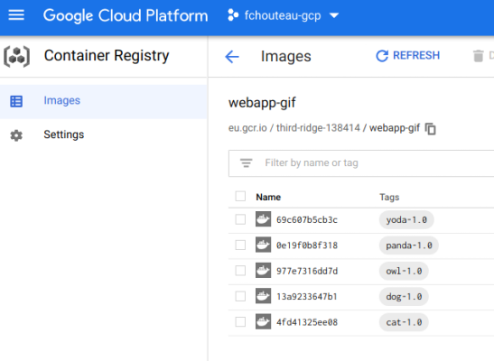

Bureau d'études Cloud & Docker🔗
Objectives of this BE🔗
This Bureau d'études (BE, for short) will guide you through the essential notions to be able to manipulate with regard to cloud computer and docker,
We will illustrate the following:
- Work in a remote environment (inside a VM, using google cloud shell)
- Creation and ssh connection to virtual machine instances
- Usage of managed storage capabilities
- Creating your own docker images
- Exchanging docker images through a Container Registry
- Pulling and running docker images created by your teammates
In particular, this workflow:

Warning
Please read all the text in the question before executing the step-by-step instructions because there might be help or indications after the instructions.
How to run this BE🔗
The best way to run this BE is to setup a Github Codespace VM and install the google cloud sdk. Refer to the previous TP to learn more
We will be using the gcloud CLI for the following:
- Create a GCE Virtual Machine
- Connect to SSH with port forwarding to said machine
For the rest of this walkthrough, if it is written "from your local machine", this will be "github codespace"
If it is written "inside the VM", this means that you should run it inside the GCE VM that you have to run the SSH tunnel first...
🙏🏻 Use Google Chrome without any ad blockers if you have any issues
Warning
⚠️ ISAE-EDU is tricky and may prevent you from correctly connecting
⚠️ eduroam works best with ssh connections
Team composition🔗
You should be in team of 5, however this will work with a minimum of 2 people. Designate a "project manager" (the person who is the most comfortable with the google cloud platform UI). She or He will have the hard task of giving access to his/her GCP project to the other team members to enable collaboration.
This means that the project of the "team leader" will be billed a little more for the duration of this BE, so please be kind with the project and apply good cloud hygiene :)
Each team member picks a different cute mascot and remembers it:
- 🐈 cat
- 🐕 dog
- 👽 (baby) yoda
- 🦉 owl
- 🐼 panda
Find a groupname, because you will need it for the next steps
0 - Setup🔗
- Launch your Github Codespaces instance
- Ensure that the google cloud sdk is installed and configured to the
isae-sddproject
1 - Get the necessary resources from Google Cloud Storage🔗
From your github codespace,
The resources are located at the URI gs://fchouteau-isae-cloud/be/${MASCOT},
Your ${MASCOT} name is either:
- cat
- dog
- owl
- panda
- yoda
I advise you to export MASCOT=.... to remember it :)
ONLY DOWNLOAD your mascot resources (no cheating ! this will only cause confusion later)
Download them to your instance using the gcloud cli (refer to your previous work for more information)
Hint
gsutil -m cp -r {source} {destination}
Go to (cd) the folder where you downloaded your resources
You should see a file structure like this
fchouteau@be-cloud-mascot:~/be$ tree yoda -L 2
yoda
├── app.py
├── AUTHOR.txt
├── Dockerfile
├── favicon.ico
├── imgs
│ ├── 1.gif
│ ├── 2.gif
│ ├── 3.gif
│ ├── 4.gif
│ └── 5.gif
└── template.html.jinja2
1 directory, 10 files
2 - Build your docker image🔗
Question
- Look at the
Dockerfile(cat Dockerfile), what does it seem to do ? - Look at
app.py(cat app.py). What is Flask ? What does it seem to do ?
- Edit the file
AUTHOR.txtto add your name instead of the placeholder - Refer to your previous work to build the image
Danger
On which port is your flask app running ? (cat Dockerfile)
Note it carefully ! You will need to communicate it to your teammate :)
- When building the image, name it appropriately... like
eu.gcr.io/${PROJECT_ID}/webapp-gif:${GROUPNAME}-${MASCOT}-1.0!
Hint
to get your project id:
PROJECT_ID=$(gcloud config get-value project 2> /dev/null)
- now if you list your images you should see it !
REPOSITORY TAG IMAGE ID CREATED SIZE
eu.gcr.io/{your project}/{your-app} 1.0 d1c5993848bf 2 minutes ago 62.1MB
Question
Describe concisely (on slack) to your past self (before the pandemic) what is a Docker Image
3 - Push your Docker image in the Container Registry🔗
-
Help your team mates so that everybody can build his/her Docker Image
Question
Describe succintly (on slack) to your past self (before the pandemic) what is a Container Registry
Bug
in case of error
gcloud auth configure-docker
In the end, things should look like this

4 - Create Google Compute Engine VM🔗
Each team member creates a separate machine on the same project,
Here, you will create a Google Compute Engine instance, preconfigured with everything you need,
If you use the google cloud CLI (either your local google cloud sdk or google cloud shell), you can use this
First, set a variable with the name of your instance,
export INSTANCE_NAME="be-cloud-mascot-{yourgroup}-{yourname}" # Don't forget to replace values !
Then create your VM
gcloud compute instances create $INSTANCE_NAME \
--zone="europe-west1-b" \
--machine-type="n1-standard-1" \
--image-family="common-cpu" \
--image-project="deeplearning-platform-release" \
--maintenance-policy=TERMINATE \
--scopes="storage-rw" \
--boot-disk-size=75GB
If you have an issue with quota, use any of europe-west4-{a,b,c,d} or europe-west1-{b,c,d} or europe-2-{a,b,c,d} as a zone
If you use the web interface, follow this
Question
Describe concisely (on slack) to your past self (before the pandemic) what is a Virtual Machine and what is Google Compute Engine
5 - Connect using SSH to the instance🔗
If you are using the google cloud sdk in your computer or github codespace, you can connect to ssh using the usual command (refer to the first hands-on) with SSH Tunneling. FIRST CONNECT TO EDUROAM as eduroam allows connecting to ssh.
Tunnel the following ports to your local machine:
- 8080: This is reserved for a jupyter lab session by default, it makes it easy to see & edit text
- 8081: You will neeed to run containers and expose them on a port
Hint
gcloud compute ssh {user}@{instance} -- \
-L {client-port}:localhost:{server-port} \
-L {client-port-2}:localhost:{server-port-2}
Go to your browser and connect to http://localhost:8080, you should be in a jupyter lab where you can access a terminal, a text editor etc...
Question
Where is this jupyter lab hosted ? Describe concisely what is a SSH Tunnel and what is port forwarding
6 - Pull Docker Images from your teammates🔗
You should be inside the your VM,
Question
How to check that you're inside your VM ? On your terminal you should see user@hostname at the beginning. Hostname should be the name of your VM
-
Select another mascot and pull the corresponding docker image from the registry
-
List the docker images you have. You should have at least 2 including yours
7 - Run Docker Containers from their Docker Images🔗
-
Run your container while mapping the correct port to your VM 8081. Which port is it ? Well, ask the one who built the image.
-
When running the container, setup the
USERenvironment variable to your name !
Hint
the port is not the same as yours
if you don't set the username, it will come to bite your later ;)
9 - Display the results & share them🔗
-
You just launched a webapp on the port 8081 of your remote instance.
-
If you have a ssh tunnel directly from your laptop, ensure that you made a tunnel for your port 8081 to any port of your machine then, go to
http://localhost:(your port)inside your browser. The resulting webpage should appear -
If you are using github codespace, open web preview on port 8081 (you should have a tunnel running between your github codespace and your GCE instance)
-
The 8081 port has been opened to the internet, you can also connect to your machine's public ip address on the port 8081 (http//{ip}:8081) and you should see it.
How to get your public IP ? Go to the GCP interface and you can find it, or run gcloud compute instances list | grep {your instance name}
Note : This only works in 4G so use your mobile phone to check for the website
Success
- The webpage should show the mascot your chose to run
- The webpage should show the name of the author (not you)
- The webpage should show your name
Bug
If any of the three item above are missing, find the bug and solve it :)
Example
Try to refresh the webpage to make more gifs appear
Share your result on slack
10. Cleanup the GCP project🔗
- Remove your VMs (DELETE them)
- Remove images from the container registry
11. Yay !🔗
Success
🎉 you have successfully finished the BE. You know how to manipulate the basic notions around cloud computing and docker so that you won't be completely lost when someone will talk about it
If you have time left, you can go back and finish all the previous hands-on
You can also look at the Streamlit Hands-On by Toulouse Data Science in preparation for the next class : - Slides - Repository
If you have even more time, you can have a look at the next class, do the hands-on, and if you really have finished everything, read the kubernetes comic and do the Kubernetes hands-on !